Dataset evidence 3/3
The same trajectories from the wrist camera used by the policy.
Color Diversity
cube color changes
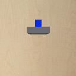


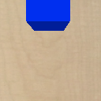
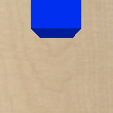
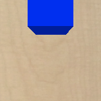
Camera View Diversity
external viewpoint changes
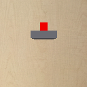


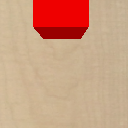
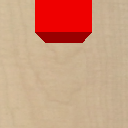
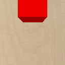
Spatial Diversity
target location changes
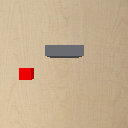
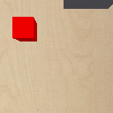
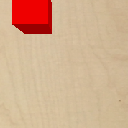
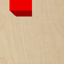
Lighting Diversity
light direction and intensity change